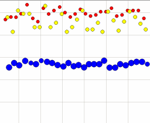
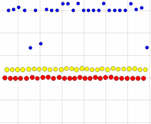
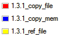

- How the test was performed
- Time and memory usage
- Mean time and memory usage difference between methods
- Bundle list in test setup
How the test was performed
The test was performed by- Launching the framework from a wrapper script. See timing_tester bundle for source.
- Installing and starting a set of "typical bundles". See bundle list for exact bundles.
- Installing a special notification bundle.
- Measuring the time from the JVM is completely started until the notification bundle is started.
- Measuring memory difference from the JVM is completely started until the notification bundle is started.
- Repeating 1-5 multiple times.
Java(TM) 2 Runtime Environment, Standard Edition (build 1.4.2_03-b02) Java HotSpot(TM) Client VM (build 1.4.2_03-b02, mixed mode)The machine used for testing was a Dell X300, 1200 Mhz, 640 Mb, running Windows XP SP1. When started, the total amount of memory used by the JVM was approximately 11 Mb, according to XP.
Time and memory usage
A dot-graph of the test runs gives a the most accurate view of the different behaviors. The horizontal axis represents time and the vertical axis memory and time.
file storage with file: references (yellow) often is faster than non-reference, but not always. Memory storage (blue) is fast, but uses a lot of memory as expected. Plain non-reference file storage (red) is most memory-efficient. This is because jar files are copied, unpacked and only resources actually used will be loaded into memory.
The full images can be viewed by clicking on the graphs.
|
Startup time
 |
Memory usage  |
 These images were generated from the text file perf_log.csv, using Spotfire DecisionSite |
{kind=link}
{kind=link}
Note 1: Memory is differences in heap memory, not disk usage. The intention with the file: reference method is to avoid copying a bundle file to another place in the file system. Disk usage is not measured by these tests.
Note 2: The JVM native startup time is not included in the measurements. All timing is done inside of the JVM itself.
Note: Since the memory usage values are differences in heap space from JVM startup, until the FW has completed, not total heap space used, the values are mostly useful for comparing bundle storage methods. The total memory usage is not measured in these tests.
Mean time and memory usage
The table below lists the mean values of a test series of 27 runs. Note that these are approximate values, and variations are to be expected.
Note: Memory usage is differences in heap space from JVM startup, until the FW has completed, not total heap space used. Thus, the values are mostly useful for comparing bundle storage methods, not for determining total memory costs.
| Startup time (ms) | Memory usage (kb) | Flags | |
|---|---|---|---|
| 1000 ms | 400 kb | -Dorg.knopflerfish.framework.bundlestorage=file -Dorg.knopflerfish.framework.bundlestorage.file.reference=false |
|
| 900 ms | 480 kb | -Dorg.knopflerfish.framework.bundlestorage=file -Dorg.knopflerfish.framework.bundlestorage.file.reference=true |
|
| 550 ms | 1000 kb | -Dorg.knopflerfish.framework.bundlestorage=memory |
Bundle list in test setup
The following bundles were installed and started in all of the test runs. Each test run was started with-init.
log/log_all-1.0.0.jar cm/cm_all-1.0.0.jar console/console_all-1.0.0.jar util/util-1.0.0.jar jaxp/jaxp-1.0.jar jsdk/jsdk-2.2.jar device/device_all-1.0.0.jar useradmin/useradmin_all-1.0.0.jar http/http_all-1.0.0.jar logcommands/logcommands-1.0.0.jar cm_cmd/cm_cmd-1.0.0.jar consoletty/consoletty-1.0.1.jar consoletelnet/consoletelnet-1.0.jar httproot/httproot-1.0.0.jarAdditionally, the test bundle itself was started
tester/tester-1.0.0.jar